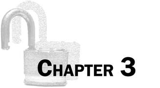
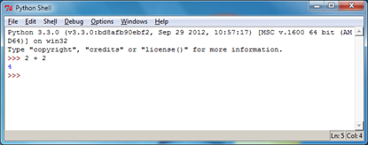
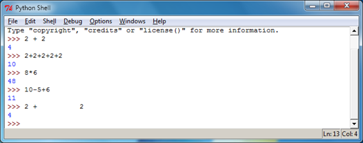
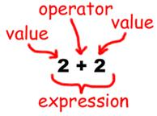
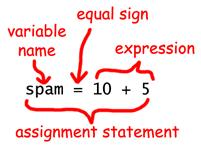
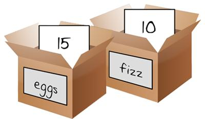

Topics Covered In This Chapter:
· Integers and floating point numbers
· Expressions
· Values
· Operators
· Evaluating expressions
· Storing values in variables
· Overwriting variables
Before we start writing encryption programs we should first learn some basic programming concepts. These concepts are values, operators, expressions, and variables. If you’ve read the Invent Your Own Computer Games with Python book (which can be downloaded for free from http://inventwithpython.com) or already know Python, you can skip directly to chapter 5.
Let’s start by learning how to use Python’s interactive shell. You should read this book while near your computer, so you can type in the short code examples and see for yourself what they do.
Start by opening IDLE. You will see the interactive shell and the cursor blinking next to the >>> (which is called the prompt). The interactive shell can work just like a calculator. Type 2 + 2 into the shell and press the Enter key on your keyboard. (On some keyboards, this is the Return key.) As you can see in Figure 3-1, the computer should respond with the number 4.

Figure 3-1. Type 2+2 into the shell.
2 + 2 isn’t a program by itself, it’s just a single instruction (we’re just learning the basics right now). The + sign tells the computer to add the numbers 2 and 2. To subtract numbers use the – sign. To multiply numbers use an asterisk (*) and to divide numbers use /.
Table 3-1: The various math operators in Python.
|
Operator |
Operation |
|
+ |
addition |
|
- |
subtraction |
|
* |
multiplication |
|
/ |
division |
When used in this way, +, -, *, and / are called operators because they tell the computer to perform an operation on the numbers surrounding them. The 2s (or any other number) are called values.
In programming whole numbers like 4, 0, and 99 are called integers. Numbers with fractions or decimal points (like 3.5 and 42.1 and 5.0) are floating point numbers. In Python, the number 5 is an integer, but if we wrote it as 5.0 it would be a floating point number
Try typing some of these math problems into the shell, pressing Enter key after each one:
2+2+2+2+2
8*6
10-5+6
2 + 2
Figure 3-2 is what the interactive shell will look like after you type in the previous instructions.

Figure 3-2. What the IDLE window looks like after entering instructions.
These math problems are called expressions. Computers can solve millions of these problems in seconds. Expressions are made up of values (the numbers) connected by operators (the math signs). There can be any amount of spaces in between the integers and these operators. But be sure to always start at the very beginning of the line though, with no spaces in front.

Figure 3-3. An expression is made up of values (like 2) and operators (like +).
You might remember “order of operations” from your math class. For example, multiplication has a higher priority than addition. Python copies this for the * and + operators. If an expression has both * and + operators, the * operator is evaluated first. Type the following into the interactive shell:
>>> 2 + 4 * 3 + 1
15
>>>
Because the * operator is evaluated first, 2 + 4 * 3 + 1 evaluates to 2 + 12 + 1 and then evaluates to 15. It does not evaluate to 6 * 3 + 1, then to 18 + 1, and then to 19. However, you can always use parentheses to change which should operations should happen first. Type the following into the interactive shell:
>>> (2 + 4) * (3 + 1)
24
>>>
When a computer solves the expression 10 + 5 and gets the value 15, we say it has evaluated the expression. Evaluating an expression reduces the expression to a single value, just like solving a math problem reduces the problem to a single number: the answer.
An expression will always evaluate (that is, shorten down to) a single value.
The expressions 10 + 5 and 10 + 3 + 2 have the same value, because they both evaluate to 15. Even single values are considered expressions: The expression 15 evaluates to the value 15.
However, if you type only 5 + into the interactive shell, you will get an error message.
>>> 5 +
SyntaxError: invalid syntax
This error happened because 5 + is not an expression. Expressions have values connected by operators, but in the Python language the + operator expects to connect two values. We have only given it one in “5 + ”. This is why the error message appeared. A syntax error means that the computer does not understand the instruction you gave it because you typed it incorrectly. This may not seem important, but a lot of computer programming is not just telling the computer what to do, but also knowing exactly how to tell the computer to do it.
It’s perfectly okay to make errors! You will not break your computer by typing in bad code that causes errors. If you type in code that causes an error, Python simply says there was an error and then displays the >>> prompt again. You can keep typing in new code into the interactive shell.
Until you get more experience with programming, the error messages might not make a lot of sense to you. You can always Google the text of the error message to find web pages that talk about that specific error. You can also go to http://invpy.com/errors to see a list of common Python error messages and their meanings.
Practice exercises can be found at http://invpy.com/hackingpractice3A.
“Integer” and “floating point” are known as data types. Every value has a data type. The value 42 is a value of the integer data type. We will say 42 is an int for short. The value 7.5 is a value of the floating point data type. We will say 7.5 is a float for short.
There are a few other data types that we will learn about (such as strings in the next chapter), but for now just remember that any time we say “value”, that value is of a certain data type. It’s usually easy to tell the data type just from looking at how the value is typed out. Ints are numbers without decimal points. Floats are numbers with decimal points. So 42 is an int, but 42.0 is a float.
Our programs will often want to save the values that our expressions evaluate to so we can use them later. We can store values in variables.
Think of a variable as like a box that can hold values. You can store values inside variables with the = sign (called the assignment operator). For example, to store the value 15 in a variable named “spam”, enter spam = 15 into the shell:
>>> spam = 15
>>>

Figure 3-4. Variables are like boxes with names that can hold values in them.
You can think of the variable like a box with the value 15 inside of it (as shown in Figure 3-4). The variable name “spam” is the label on the box (so we can tell one variable from another) and the value stored in it is like a small note inside the box.
When you press Enter you won’t see anything in response, other than a blank line. Unless you see an error message, you can assume that the instruction has been executed successfully. The next >>> prompt will appear so that you can type in the next instruction.
This instruction with the = assignment operator (called an assignment statement) creates the variable spam and stores the value 15 in it. Unlike expressions, statements are instructions that do not evaluate to any value, they just perform some action. This is why there is no value displayed on the next line in the shell.
It might be confusing to know which instructions are expressions and which are statements. Just remember that if a Python instruction evaluates to a single value, it’s an expression. If a Python instruction does not, then it’s a statement.
An assignment statement is written as a variable, followed by the = operator, followed by an expression. The value that the expression evaluates to is stored inside the variable. (The value 15 by itself is an expression that evaluates to 15.)

Figure 3-5. The parts of an assignment statement.
Remember, variables store single values, not expressions. For example, if we had the statement, spam = 10 + 5, then the expression 10 + 5 would first be evaluated to 15 and then the value 15 would be stored in the variable spam. A variable is created the first time you store a value in it by using an assignment statement.
>>> spam = 10 + 5
>>> spam
15
>>>
And here’s an interesting twist. If we now enter spam + 5 into the shell, we get the integer 20:
>>> spam = 15
>>> spam + 5
20
>>>
That may seem odd but it makes sense when we remember that we set the value of spam to 15. Because we’ve set the value of the variable spam to 15, the expression spam + 5 evaluates to the expression 15 + 5, which then evaluates to 20. A variable name in an expression evaluates to the value stored in that variable.
We can change the value stored in a variable by entering another assignment statement. For example, try the following:
>>> spam = 15
>>> spam + 5
20
>>> spam = 3
>>> spam + 5
8
>>>
The first time we enter spam + 5, the expression evaluates to 20, because we stored the value 15 inside the variable spam. But when we enter spam = 3, the value 15 is overwritten (that is, replaced) with the value 3. Now, when we enter spam + 5, the expression evaluates to 8 because the spam + 5 now evaluates to 3 + 5. The old value in spam is forgotten.
To find out what the current value is inside a variable, enter the variable name into the shell.
>>> spam = 15
>>> spam
15
This happens because a variable by itself is an expression that evaluates to the value stored in the variable. This is just like how a value by itself is also an expression that evaluates to itself:
>>> 15
15
We can even use the value in the spam variable to assign spam a new value:
>>> spam = 15
>>> spam = spam + 5
20
>>>
The assignment statement spam = spam + 5 is like saying, “the new value of the spam variable will be the current value of spam plus five.” Remember that the variable on the left side of the = sign will be assigned the value that the expression on the right side evaluates to. We can keep increasing the value in spam by 5 several times:
>>> spam = 15
>>> spam = spam + 5
>>> spam = spam + 5
>>> spam = spam + 5
>>> spam
30
>>>
Your programs can have as many variables as you need. For example, let’s assign different values to two variables named eggs and fizz:
>>> fizz = 10
>>> eggs = 15
Now the fizz variable has 10 inside it, and eggs has 15 inside it.

Figure 3-6. The “fizz” and “eggs” variables have values stored in them.
Let’s try assigning a new value to the spam variable. Enter spam = fizz + eggs into the shell, then enter spam into the shell to see the new value of spam. Type the following into the interactive shell:
>>> fizz = 10
>>> eggs = 15
>>> spam = fizz + eggs
>>> spam
25
>>>
The value in spam is now 25 because when we add fizz and eggs we are adding the values stored inside fizz and eggs.
The computer doesn’t care what you name your variables, but you should. Giving variables names that reflect what type of data they contain makes it easier to understand what a program does. Instead of name, we could have called this variable abrahamLincoln or monkey. The computer will run the program the same (as long as you consistently use abrahamLincoln or monkey).
Variable names (as well as everything else in Python) are case-sensitive. Case-sensitive means the same variable name in a different case is considered to be an entirely separate variable. So spam, SPAM, Spam, and sPAM are considered to be four different variables in Python. They each can contain their own separate values.
It’s a bad idea to have differently-cased variables in your program. If you stored your first name in the variable name and your last name in the variable NAME, it would be very confusing when you read your code weeks after you first wrote it. Did name mean first and NAME mean last, or the other way around?
If you accidentally switch the name and NAME variables, then your program will still run (that is, it won’t have any “syntax” errors) but it will run incorrectly. This type of flaw in your code is called a bug. A lot of programming is not just writing code but also fixing bugs.
It also helps to capitalize variable names if they include more than one word. If you store a string of what you had for breakfast in a variable, the variable name whatIHadForBreakfast is much easier to read than whatihadforbreakfast. This is called camel case, since the casing goes up and down like a camel’s humps. This is a convention (that is, an optional but standard way of doing things) in Python programming. (Although even better would be something simple, like todaysBreakfast. Capitalizing the first letter of each word after the first word in variable names makes the program more readable.
Practice exercises can be found at http://invpy.com/hackingpractice3B.
Soon. But before we can hack ciphers, we need to learn some more basic programming concepts. We won’t need to learn a lot before we start writing encryption programs, but there’s one more chapter on programming we need to cover.
In this chapter you learned the basics about writing Python instructions in the interactive shell. Python needs you to tell it exactly what to do in a strict way, because computers don’t have common sense and only understand very simple instructions. You have learned that Python can evaluate expressions (that is, reduce the expression to a single value), and that expressions are values (such as 2 or 5) combined with operators (such as + or -). You have also learned that you can store values inside of variables so that your program can remember them to use them later on.
The interactive shell is a very useful tool for learning what Python instructions do because it lets you type them in one at a time and see the results. In the next chapter, we will be creating programs of many instructions that are executed in sequence rather than one at a time. We will go over some more basic concepts, and you will write your first program!